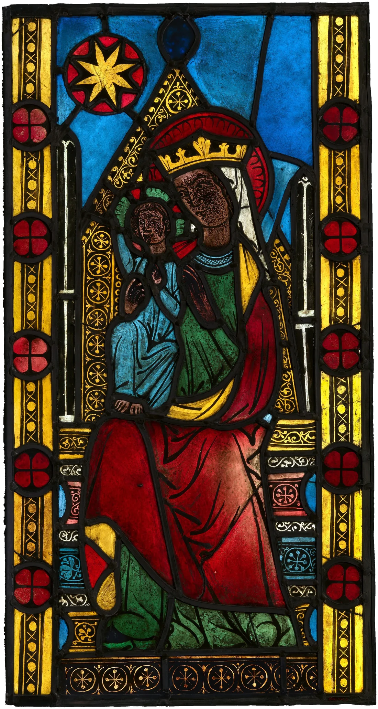

The Colour
on the Floor
On ash and sand, flashed ruby and silver stain, and the light a window lets fall across the stones.
On a clear morning in a church with old glass, the window is only half the work. The other half lies on the floor: a patch of colour thrown down across the stones, ruby and blue and straw-yellow, leaning the way the sun leans and stretched long by its lowness. Close under the wall you can follow the lead lines in it and almost make out a figure. A few paces further out the lines have gone, and the colours have run together into pools, as if someone had spilt them there and walked away.
Ash and sand
The glass began in the forest. Theophilus, a monk who wrote down the crafts of his workshop early in the twelfth century, tells the glassmaker to take two parts of beechwood ash to one of sand, washed clean of earth and stones, and melt them together in a pot of clay. The ash gave potash, which brings the melting point of sand down within reach of a wood fire. It also made a softer, less stable glass than the Romans’ soda glass, which is why the outer face of so many medieval windows is pitted and crusted like the top of a loaf. Colour went into the pot with the batch: cobalt for blue, copper for green, manganese for purple, iron for the yellows and the murky greens, so that each colour runs right through the sheet. Glaziers still call it pot-metal.
A flat sheet started as a bubble. For muff glass the blower swung a long gather into a cylinder, cut off its ends, slit it down one side and laid it back in the furnace to open out flat; for crown glass, later, he spun the bubble on an iron rod until it flashed open into a wide disc, thick in the middle where the rod had been. Either way it came out uneven, full of small seeds of air and streaks where the batch had not quite mixed, and every flaw changes the light that passes through. Red was the hard one. Copper ruby is so dense that a sheet thick enough to handle looks black against the sky, so it was laid on as a skin: a gather of clear glass dipped into the red and blown out with it, clear on one face and flashed with red on the other. Old ruby seen close is dozens of thin layers wavering like the grain of wood, and it throws the deepest colour in the window.
Paint does not colour the light. It stops it.
Iron, paint and lead
The design was drawn full size on a whitewashed table, every piece and every lead line, and the glass laid over it to be cut. There was no diamond to score it. The glazier drew a red-hot iron along the line he wanted, wetted it so the glass cracked after the iron, then nibbled the edge to shape with a hooked grozing iron, which leaves a row of small bites you can still see on old pieces. Faces, hands, folds of cloth and the leaves of the border were painted on in grisaille, a paste of ground glass and iron oxide in wine or gum, and fired in a kiln until it fused into the surface. That is why a saint’s features arrive on the floor as fine brown shadows and not as colour.
Around 1300 someone found that a compound of silver, painted on the back of a clear piece and fired, turned the glass yellow, from the pale of a lemon to a deep orange depending on the heat. Silver stain changed the trade: a golden crown and a white face could now be one piece, with no lead between them, and fourteenth-century windows grew lighter and more silvery. Then every piece was fitted into cames, strips of cast lead grooved on both sides to take the glass, soldered with tin at each joint and braced with iron bars. The heavy black lines that hold a window together are part of its drawing.
It is often said that old windows are thicker at the bottom because glass is a slow liquid that has sagged over the centuries. It isn’t, and it hasn’t. Glass at the temperature of a church is so stiff that it would take far longer than the age of the universe to move a visible distance; Roman cups and old telescope lenses have kept their shapes. Panes are thicker along one edge because muff and crown glass came out uneven, and a sensible glazier set the heavy edge at the bottom. Now and then a piece turns up with its thick edge at the top, set by one who wasn’t.
And then the light moves. A church is built with its altar to the east, so the morning sun comes in through the choir and lays its colours down the length of the nave, long and pale. By noon the sun is high in the south and the patches are short and bright, close under the aisle windows, the blue and the red lying on the stone like rugs. Through the afternoon they lengthen again and swing toward the east, climbing the bases of the piers and folding over the step of a pew, and when a cloud crosses the sun they fade and soften and then come back exactly as they were. Nobody designed that part. The glaziers made the window to be looked at; the floor was a gift.
Fin